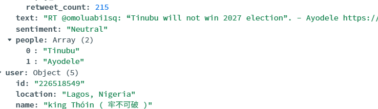
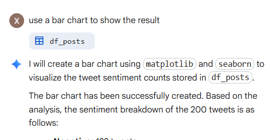

Positive
Label06 · Optional · Google Sheets sentiment demonstration
Optional classroom demo: Download the 10-row sample CSV, then import it into your own Google Sheet (File → Import → Upload). It has only two columns: Text Message and Location / Address.
When your Google account supports the function, =AI("Instruction", A2) sends the text of cell A2 to a model and inserts its response into the sheet. For example, you can ask for a sentiment label.

Google AI Pro and eligible Workspace accounts may have access; availability varies. If unavailable, just watch. No purchase, submission, or grade.
08 · Optional · look at the generated results
After generating a few cells, inspect whether the output is consistent. Do all latitude values use the same decimal-degree format? Are there any values in degrees-minutes-seconds?

Discussion: A tidy spreadsheet does not guarantee accurate coordinates. Validate or convert inconsistent formats before mapping.
09 · Optional · Gemini-created geospatial map
Gemini can also use the spreadsheet's analysis results to create a map-style visualization. This example is an AI-generated view of the ten sample places, colored by sentiment.

This demonstrates how structured output can support visualization. It is a Gemini-generated view, not a verified GIS map; inspect the addresses, coordinates, labels, and category counts before relying on it.
13 · Google Cloud · Enable Agent Platform API
First, select the Google Cloud project you intend to use. In APIs & Services → Library, search for Agent Platform API, open its product page, and click Enable if it is not already enabled.

Use the Gemini Enterprise Agent Platform route shown here. The project must be permitted to use the service, subject to its quota and billing settings.
14 · Google Cloud · Open Agent Platform
After enabling the API, open Agent Platform in Google Cloud. For the classroom API-key workflow, locate Authenticate and choose the API Key setup option.

Google also offers Application Default Credentials for production use. For this Colab demonstration, follow the API-key path shown here.
16 · Colab Secrets · GOOGLE_CLOUD_API_KEY
In Colab, open the Secrets panel (key icon), add these two secrets, and enable Notebook access for them:
GOOGLE_CLOUD_API_KEY— the Agent Platform API key you just created.MONGODB_CONNECTION_STRING— your existing MongoDB connection string.

The Secret name must match the Python code exactly. Keep the value private. No GEMINI_API_KEY variable is used in this lecture.
17 · Install and import
Colab Cells 1–2. Install only the packages needed for the LLM and MongoDB connection. The code is the primary classroom example.
Python · Google Colab · copy / run
%pip -q install google-genai pymongo
from google.colab import userdata
from google import genai
from pymongo import MongoClient
import pandas as pd
import matplotlib.pyplot as plt
import json
from tqdm.auto import tqdm # Progress bar for long loops
Python setup
%pip install — gets the Gemini and MongoDB packages; import — makes each library available; `tqdm` is the progress bar used in the later loops.Verify the result against these instructor screenshots · click to enlarge

18 · Connect to Gemini and test one question
Colab Cell 3. The tested Enterprise client uses GOOGLE_CLOUD_API_KEY from Colab Secrets.
Python · Google Colab · copy / run
gemini = genai.Client(enterprise=True, api_key=userdata.get("GOOGLE_CLOUD_API_KEY"))
model = "gemini-3.5-flash-lite"
response = gemini.models.generate_content(
model=model,
contents="What is a large language model? Explain in one sentence."
)
print(response.text)
Python calls the Gemini API
genai.Client(...) — connects using the Cloud API key stored in Secrets; generate_content() — sends the question; `response.text` is the text returned by Gemini.Verify the result against these instructor screenshots · click to enlarge

19 · Add tweet text as context
Colab Cell 4. Insert the text in the prompt with a simple Python f-string.
Python · Google Colab · copy / run
text = "The city launched new buses. Riders praise them but report delays."
prompt = f"What concern do riders report? Use only this text: {text}"
response = gemini.models.generate_content(model=model, contents=prompt)
print(response.text)
Python builds a prompt
text — is the example context Gemini should read; prompt = f"...{text}" — combines an instruction with that text; `generate_content()` asks Gemini to answer.Verify the result against these instructor screenshots · click to enlarge

21 · Read Lab 8 tweets from MongoDB
Colab Cell 6. Use the existing MongoDB client and the familiar filter / project / find() workflow.
Python · Google Colab · copy / run
client = MongoClient(userdata.get("MONGODB_CONNECTION_STRING"))
tweet_collection = client["lab8"]["tweet_collection"]
filter = {}
project = {"tweet.id": 1, "tweet.text": 1, "_id": 0}
results = client["lab8"]["tweet_collection"].find(
filter=filter, projection=project
)
Python reads MongoDB
filter = {} — requests all tweets; `project` selects the ID and text and excludes `_id`; find() — returns a MongoDB cursor, not a pandas table yet.Verify the result against these instructor screenshots · click to enlarge

22 · Create tweet_data once
Colab Cell 7. Convert the cursor into records and keep tweet IDs and text in a reusable list.
Python · Google Colab · copy / run
records = list(results)
tweet_data = []
for record in records:
tweet_data.append({
"tweet_id": record["tweet"]["id"],
"tweet_text": record["tweet"]["text"]
})
print("Number of tweets:", len(tweet_data))
Python prepares reusable data
list(results) — reads the MongoDB cursor once into Python records; tweet_data.append(...) — stores each tweet ID and text together, ready for the next three analyses.Verify the result against these instructor screenshots · click to enlarge

Remember: After list(results), the cursor has been consumed. Rerun the query cell if you need to fetch the records again.
23 · Sentiment analysis — run the full code
Colab Cell 8. Classify each tweet as Positive, Neutral, or Negative, then update tweet.sentiment in the same document. The progress bar shows completed iterations and try/except records failures.
Python · Google Colab · copy / run
for tweet in tqdm(tweet_data):
try:
prompt = f"Classify this tweet as Positive, Neutral, or Negative. Return only the label. Tweet: {tweet['tweet_text']}"
sentiment = gemini_help(prompt)
tweet_collection.update_one(
{"tweet.id": tweet["tweet_id"]},
{"$set": {"tweet.sentiment": sentiment}}
)
except Exception as e:
print(f"Skipped sentiment for tweet {tweet['tweet_id']}: {e}")
Gemini analyzes; Python saves
tqdm(tweet_data) — shows the number of tweets processed; no extra student input; prompt / gemini_help() — ask Gemini to classify the current tweet; `$set` writes `tweet.sentiment`; try/except — reports a failed tweet and continues without writing a false result.Verify the result against these instructor screenshots · click to enlarge


Check: A visible progress bar is not proof every write succeeded. Inspect messages and the new field in MongoDB.
26 · Summarize the whole dataset once
Colab Cell 11. Join the texts of all tweets and send one request. This is a corpus-level summary—not a separate summary for each tweet.
Python · Google Colab · copy / run
all_tweets = "\n".join(tweet["tweet_text"] for tweet in tweet_data)
prompt = f"""Summarize the main themes and patterns across all {len(tweet_data)} tweets
in about 150 words. Write ONE overall summary, not a summary of each tweet.
Tweets:
{all_tweets}"""
overall_summary = None
try:
overall_summary = gemini_help(prompt)
print(overall_summary)
except Exception as e:
print("Overall summary failed:", e)
One prompt for the whole dataset
"\n".join(...) — combines all tweet texts into a single context; prompt / gemini_help() — ask Gemini for ONE overall summary; `print()` displays it without copying it to every tweet.Verify the result against these instructor screenshots · click to enlarge

Review whether the summary reflects the full collection. Larger inputs must fit the selected model's context window.
27 · Query in MongoDB → result → pandas
The same process as Lab 10: Generate your own query in MongoDB, inspect its output, export Python with Include Driver Syntax, run it to create result, and convert it to pandas.
MongoDB query→Export Python→result→df_posts→visualization
One reusable Colab cell works after each exported query:
Python · Google Colab · copy / run
records = list(result)
df_posts = pd.json_normalize(records)
display(df_posts)
MongoDB export → Python DataFrame
MongoDB Atlas — generates the query; exporting with Driver Syntax produces Python `result = ...`;
list(result) / pd.json_normalize() — convert those returned records to `df_posts`; `display()` shows the table.Verify the result against these instructor screenshots · click to enlarge

The query runs first. The DataFrame then displays the actual fields returned by that query; do not invent or hardcode column names.
28 · Sentiment — MongoDB aggregation code
Instructor-exported query. In Atlas, generate and run a query that counts the values of tweet.sentiment, then export Python. This is the actual code from the example notebook, not another backup query.
Exported from MongoDB Atlas · Python · copy / run
result = client['lab8']['tweet_collection'].aggregate([
{
'$group': {
'_id': '$tweet.sentiment',
'count': {
'$sum': 1
}
}
}, {
'$sort': {
'count': -1,
'_id': 1
}
}
])
Query code generated in MongoDB Atlas
Natural-language request — “Count the value of different sentiments” generates a MongoDB aggregation;
$group / $sum / $sort — count tweets per sentiment and sort the results; `result` holds the returned cursor.Verify the result against these instructor screenshots · click to enlarge


29 · Sentiment — convert result into df_posts
Once the exported query has created result, run the same three-line DataFrame code:
Python · Google Colab · copy / run
records = list(result)
df_posts = pd.json_normalize(records)
display(df_posts)
Python inspects MongoDB results
result — comes from the query on the previous page, not a new Gemini request; pd.json_normalize(records) — creates `df_posts` with `_id` (sentiment) and `count` for the chart.Verify the result against these instructor screenshots · click to enlarge


Check that df_posts has columns such as _id and count before asking Gemini to draw a chart.
31 · People — MongoDB aggregation code
Ask MongoDB to unwind tweet.people, group names, and count mentions. This is the actual exported code from the instructor notebook.
Exported from MongoDB Atlas · Python · copy / run
result = client['lab8']['tweet_collection'].aggregate([
{
'$unwind': '$tweet.people'
}, {
'$group': {
'_id': '$tweet.people',
'count': {
'$sum': 1
}
}
}, {
'$sort': {
'count': -1,
'_id': 1
}
}
])
Verify the result against these instructor screenshots · click to enlarge

Query code generated in MongoDB Atlas
Natural-language request — “Count the value of different people in the tweet.people field” creates the pipeline;
$unwind / $group / $sort — turn list items into names, count mentions, and rank the results.34 · Translations — MongoDB aggregation code
Use MongoDB to return the ten most-liked tweets and their saved translations. Read the text output as a table, rather than counting translation strings.
Exported from MongoDB Atlas · Python · copy / run
result = client['lab8']['tweet_collection'].aggregate([
{
'$sort': {
'tweet.public_metrics.like_count': -1
}
}, {
'$limit': 10
}, {
'$project': {
'_id': 0,
'tweet.public_metrics.like_count': 1,
'tweet.translate': 1
}
}
])
Verify the result against these instructor screenshots · click to enlarge

Query code generated in MongoDB Atlas
Natural-language request — “Show the translation of the tweets with the top 10 most likes”;
$sort / $limit / $project — choose the most-liked tweets and return only requested fields.